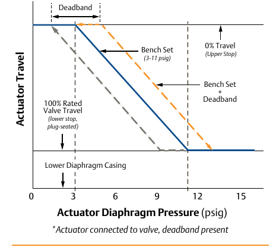

Bench Set — the Travel/Diaphragm-Pressure Relationship

- 1Bench Set (3–11 psig) — the initial spring compression set at the spring adjuster; for an air-to-open actuator, its lower value (3 psig) fixes the pressure at which opening travel begins.
- 2Deadband — the pressure range the signal must cross, from backlash and static friction (stiction) in the mechanical connection, before travel actually resumes.
- 3Bench Set + Deadband — the combined, wider range once the actuator is connected to the real valve with deadband present (the dashed reference line).
- 40% / 100% Travel — 0% Travel is the upper stop; 100% Rated Valve Travel is the lower stop, plug seated — matching this course's own travel-axis convention (0% at top).
After Control Valve Handbook, 6th ed., Fig. 8.10 — used directly (Style Guide §5.8 default; none of its three redraw reasons apply here). Component Index: cvh-cmp-bench-set-seating-force-graph.